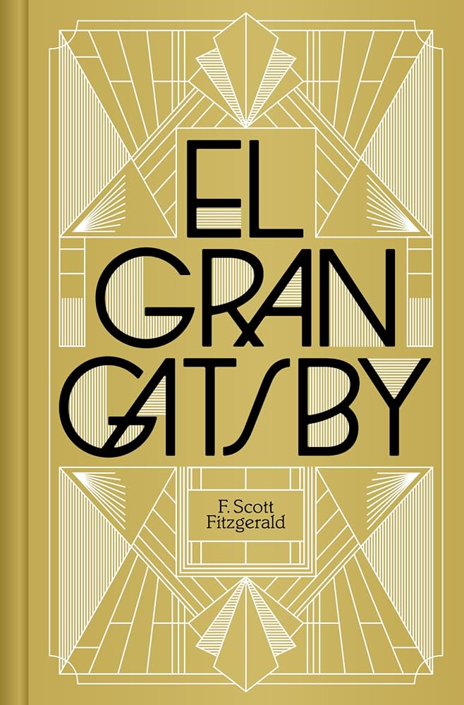

Autor: F. Scott Fitzgerald
Anio: 1925
Genero: Ficcion
Idioma original: Ingles
Nick Carraway llega a Long Island y conoce a Gatsby, el vecino de las fiestas imposibles. Gatsby quiere recuperar a Daisy y el sueno americano se ve de cerca: plata, amor y un final seco. Corto, brillante y muy de los 20.